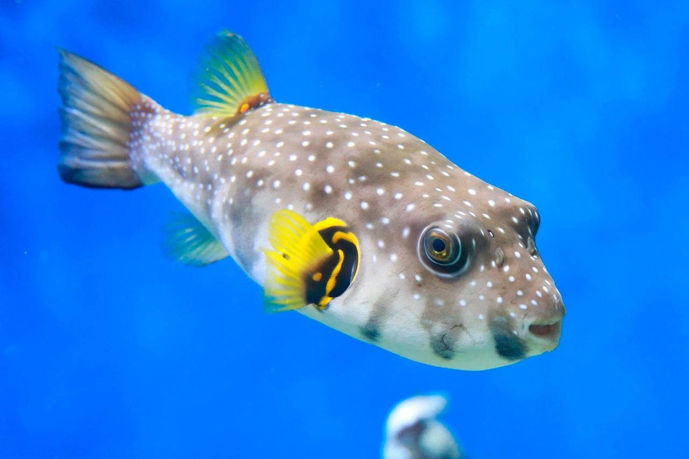

Аротроны
Описание
Аротроны – крайне необычные рыбы, обладающие множеством особенностей, не укладывающихся в привычный для нас образ рыб. Их громоздкое туловище напоминает дирижабль, а кожа их лишена чешуи и нежная на ощупь. Но у аротронов есть свой фирменный способ защиты от врагов. При малейшей угрозе они раздуваются, приобретая форму почти идеального шара. Еще одна черта аротронов – их зубы, будто не помещающиеся во рту и торчащие вперед наподобие клюва.
В сочетании с мощными жевательными мышцами это очень удобный инструмент для разгрызания добычи – ракообразных, моллюсков, иглокожих.
Характеристики